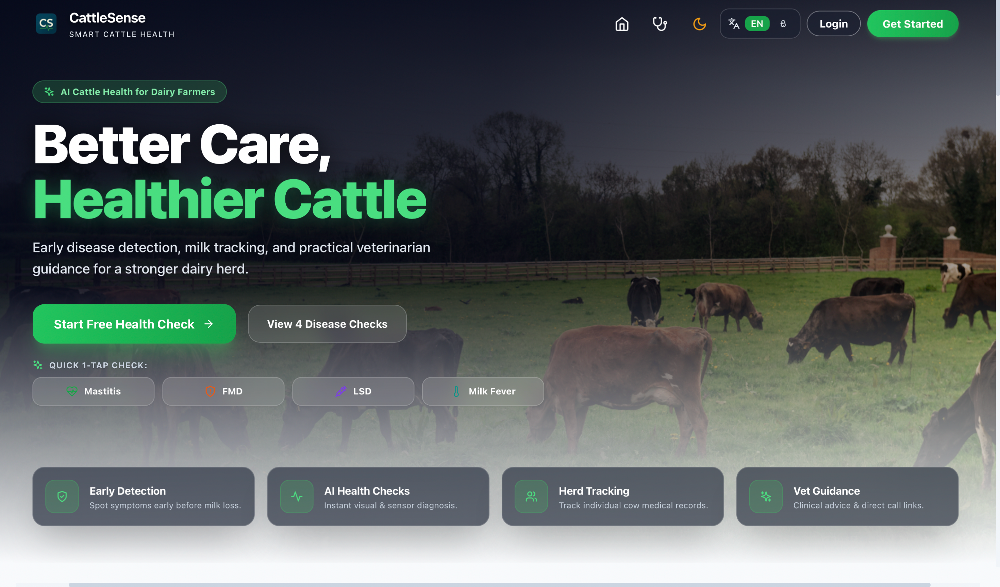
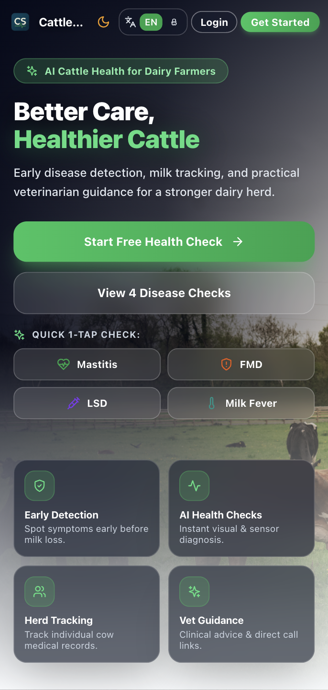

SLIIT Research Project · R26-IT-045
Machine Learning Based Early Detection of Cattle Diseases
A SLIIT final-year research project on using machine learning to help Sri Lankan smallholder dairy farmers screen their cattle early for four diseases, from phone photos and simple farm measurements.


Abstract
Mastitis, foot-and-mouth disease (FMD), lumpy skin disease (LSD) and milk fever cause heavy losses on Sri Lankan smallholder dairy farms, and they are often noticed only after the signs are clear. This research studies how machine learning can support earlier screening using evidence a farmer can collect on the farm. Each disease has its own module: a ResNet50 udder image model with a milk biomarker decision tree for mastitis, EfficientNetB0 with clinical and weather rules for FMD, YOLOv8s and ResNet50 with a symptom checklist for LSD, and a Random Forest and XGBoost ensemble for milk fever. On held-out test data the modules reached 87.01% (mastitis image model), 94.1% (FMD), 93.10% (LSD) and 97.04% (milk fever) accuracy. The four modules were joined into one English and Sinhala web platform, and veterinarians who checked it found the results and reports useful.
02 / DOMAIN
Research Context
Literature Survey
Most dairy cattle in Sri Lanka are kept on small family farms. Mastitis is the most costly dairy disease worldwide, and subclinical mastitis is common in the main milk-producing areas of the country. Foot-and-mouth disease and lumpy skin disease spread quickly through a herd, and lumpy skin disease is now notifiable in Sri Lanka. Milk fever appears around calving and can kill a cow within hours if it is not treated.
Published studies show that convolutional neural networks can recognise udder inflammation, mouth lesions and skin nodules from photographs, and that tree-based models can predict disease from simple measurements. Most of this work covers one disease and one type of data, often depends on thermal cameras, sensors or laboratory values, and stops before a tool that a farmer can actually use.
Research Gap
Representative studies from our literature review compared with CattleSense:
| Study | Diseases | Farmer inputs only | Image + other evidence | Explains result | Local language |
|---|---|---|---|---|---|
| Wang et al., 2022 | Mastitis | ||||
| Pan et al., 2025 | Mastitis | Not reported | |||
| Hadi et al., 2024 | FMD | Not reported | |||
| Ayon et al., 2026 | FMD, LSD | Not reported | |||
| CattleSense | All four |
Research Problem
Smallholder dairy farmers in Sri Lanka have no low-cost way to screen their cattle for mastitis, FMD, LSD and milk fever on the day they first suspect a problem. These diseases are usually recognised only when the signs are obvious. By then milk has been lost, treatment is harder and, for the two contagious diseases, other animals may already be infected.
Main Objective
To design, build and evaluate an integrated, machine learning based web platform that helps Sri Lankan smallholder dairy farmers screen their cattle early for mastitis, FMD, LSD and milk fever, using only evidence they can collect on the farm, and to present each result with an explanation and practical next steps.
Sub-Objectives
Fuse a ResNet50 udder image model with a decision tree on milk biomarkers, explain the image result with Grad-CAM and stage the severity of each case.
Classify lesion photographs with EfficientNetB0 and add clinical rules and a weather-based outbreak risk for the farmer's district.
Detect skin nodules with YOLOv8s, classify them with ResNet50 and combine the photo result with clinical signs.
Stage the risk of milk fever around calving from herd management information with a Random Forest and XGBoost ensemble.
Bring the four modules together behind one login, one cattle register and one detection history, in English and Sinhala.
Methodology
Each module pairs a trained model for the strongest evidence with a second source of evidence that a farmer can collect, joined by a hybrid layer whose rules are written down and tested. Every model was evaluated on a held-out test set that was not used for training. The four modules run as separate Flask services behind one API gateway, so each member could train and redeploy their own model without affecting the others.
Workflow followed by each module
System Architecture
Tools & Frameworks
Frontend
Backend
Machine Learning
Data
Deployment
03 / MODULES
Disease Focus
Four ML modules, one for each disease, each built by one member. All results are on held-out test data. Select a disease to see its inputs, logic and output.
Module details
Mastitis
What the farmer provides
- Udder photograph (phone camera)
- Milk temperature and pH
- Electrical conductivity
- Milk yield and clotting
- Symptom checklist
How it decides
A ResNet50 model classifies the udder photo and a decision tree scores the five milk biomarkers. The two probabilities are averaged (soft voting) and the symptom checklist is blended in with a 15% weight. Results within 0.15 of the decision line are marked borderline, and every positive case gets a severity stage.
What the farmer gets back
- Mastitis or normal result
- Severity: Mild, Moderate or Severe
- Grad-CAM heatmap on the photo
- Guidance and PDF report (English / Sinhala)
Module details
Foot and Mouth Disease
What the farmer provides
- Photo of mouth, tongue, hoof or teat
- Body temperature
- Clinical signs checklist
- District (for weather data)
How it decides
EfficientNetB0 classifies the lesion photo. Clinical rules score the reported signs, and live Open-Meteo weather for the district, with a seasonal rule for December to February, gives an environmental risk. The three are combined into one assessment.
What the farmer gets back
- Image result with confidence
- Clinical and environmental risk
- Combined FMD assessment
- Weather view and PDF report (English / Sinhala)
Module details
Lumpy Skin Disease
What the farmer provides
- Skin or body photograph
- Swollen lymph nodes, high fever
- Reduced milk, reduced appetite
- Nasal and eye discharge
- Body temperature
How it decides
YOLOv8s marks the nodules on the photo and ResNet50 classifies the image. The photo result counts for 70% and the weighted symptom checklist for 30% of the final probability, which is shown as Low (below 30), Moderate (30 to 70) or High (70 and above) risk.
What the farmer gets back
- LSD probability and risk level
- Nodules marked on the photo
- Share of photo and symptoms in the result
- PDF report (English / Sinhala)
Module details
Milk Fever
What the farmer provides
- Parity and body condition score
- Calving date
- First-day milk yield
- Activity level
- Symptom checklist
How it decides
Random Forest and XGBoost vote on the stage (subclinical, mild, moderate or critical). The result becomes a 0 to 100 risk score (0-24, 25-49, 50-69, 70-100), and hot, humid weather (THI) can add up to 15 points. The dataset has 8,783 records, and 1,757 of them were kept aside for testing.
What the farmer gets back
- Milk fever stage and risk score
- Main risk factors
- Nutrition and management advice
- Urgent warning for critical cases, PDF report
04 / MILESTONES
Project Timeline
Every assessment of the research project, with its date and the marks allocated. Open an assessment to see what was assessed.
-
Proposal Presentation & Report 12%of total marks
The research idea was presented to the panel together with the proposal report. It covered the background, the research gap and problem, the objectives, the planned methodology and the work split between the four members.
Submitted / presented
- Proposal presentation (group)
- Individual proposal reports
- Project charter (TAF)
-
Progress Presentation I 15%of total marks
First progress review. Each member showed the dataset, the pre-processing and the first trained model for their disease, along with the early results and the plan for the next stage.
Submitted / presented
- Progress presentation 1 slides
- Early model results for each module
-
Progress Presentation II 18%of total marks
Second progress review. The final models, the hybrid decision logic of each module and the integrated CattleSense web platform were demonstrated.
Submitted / presented
- Progress presentation 2 slides
- Working integrated platform
-
Research Paper (published) 10%of total marks
Group research paper on the project. The paper has been written and submitted, and the decision on publication is still pending.
Submitted / presented
- Group research paper
-
Final Presentation and VIVA 20%of total marks
Final presentation and demonstration of the complete system, followed by the viva on the research work of each member.
Submitted / presented
- Final presentation
- System demonstration
- Individual viva
-
Final Report 19%of total marks
The common group report and the individual final thesis of each member, covering the full research work and results.
Submitted / presented
- Common final report
- Four individual final theses
-
Website 2%of total marks
This academic information website, which documents the research, methodology, findings and all project documents. The website viva is held on the same day as the final presentation.
Submitted / presented
- Project website source code
- Website viva
-
Research Logbook, Status Document 1 & 2 4%of total marks
The research logbook kept during the project, and the two status documents that report the progress of the work.
Submitted / presented
- Research logbook
- Status document 1
- Status document 2
Total: 100%.
05 / DOCUMENTS
Project Documents
Topic Assessment Form (TAF) with the scope, objectives and plan of the project.
Individual proposal reports submitted to the faculty.
Checklists submitted with each milestone.
Common final report and the four individual final theses.
Group research paper on the CattleSense platform, submitted in August 2026.
06 / PRESENTATIONS
Presentations
Initial research proposal presented to the panel (R26-IT-045).
First progress review: datasets, first models and early results (R26-IT-045).
Second progress review: final models and the integrated platform (R26-IT-045).
Final viva presentation covering the complete CattleSense system.
07 / ABOUT US
Research Team
Supervisors
Project Members
Project Highlights
Written and submitted in August 2026.
All four modules deployed in one English and Sinhala web app.
Domain knowledge gathered from veterinarians and farmers, and the system shown to them.
08 / CONTACT US
Get in Touch
Group Email
cattlesenselk@gmail.comPhone
+94 76 581 1252Address
Sri Lanka Institute of Information Technology,Malabe,
Sri Lanka.